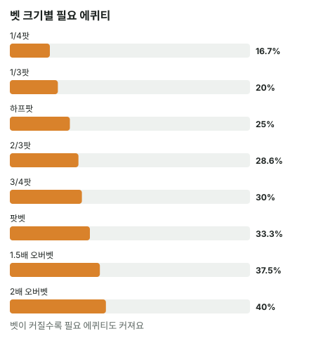

안녕하세요. B14에서 필요 에퀴티(기준선)와 우리 승률을 나란히 놓는 법을 배웠죠.
그런데 테이블에서 상대가 벳할 때마다 나눗셈을 하긴 어려워요. 생각할 시간도 많지 않고요. 오늘은 자주 나오는 벳 크기 8개의 필요 에퀴티를 표 하나로 정리하고, 그 표가 왜 그렇게 생겼는지까지 따라가 볼게요. 이유를 알면 외운 숫자를 잊어도 다시 만들 수 있어요.
이 글에서 배울 것
- 벳을 금액이 아니라 "팟의 몇 분의 몇"으로 읽는 법, 그리고 그러면 팟 크기와 상관없이 필요 에퀴티가 같아지는 이유
- 1/4팟부터 2배 오버벳까지 필요 에퀴티 표와, 그 표 안에 숨은 규칙
- 하프팟 25%·팟벳 33.3% 두 기준점만으로 나머지 벳 크기를 어림하는 법
1단계. 벳 크기는 "팟의 몇 분의 몇"으로 본다
금액이 달라도 기준선은 같아요
두 장면을 볼게요.
- 팟 10BB에 상대가 5BB 벳
- 팟 100BB에 상대가 50BB 벳
뒤쪽 콜이 훨씬 무거워 보이죠. 그런데 필요 에퀴티를 구해 보면 똑같아요.
5(우리 콜) ÷ (10(원래 팟) + 5(상대 벳) + 5(우리 콜)) = 5 ÷ 20 = 25% 50 ÷ (100 + 50 + 50) = 50 ÷ 200 = 25%
둘 다 상대가 팟의 절반을 걸었기 때문이에요. 그래서 필요 에퀴티는 팟이 몇 BB인지가 아니라 벳이 팟의 얼마만큼인지로 정해져요.
할인율로 생각해 보기
비유하면 할인율이에요. 만 원짜리든 십만 원짜리든 "반값"이면 같은 비율이잖아요.
팟과 벳이 같이 열 배가 되면, 우리가 낼 돈도 열 배, 이기면 받는 돈도 열 배가 돼요. 둘의 비율은 그대로죠. 필요 에퀴티는 바로 그 비율이라서 변하지 않아요.
그러니까 상대가 벳하면 먼저 "팟의 몇 분의 몇이지?"만 보면 돼요. 금액은 그다음이에요.
2단계. 공식을 벳 크기로 바꾸기
공식 다시 보기
B06의 공식은 우리가 낼 돈 ÷ 콜한 뒤 전체 팟이었어요. 콜한 뒤 전체 팟은 원래 팟 + 상대 벳 + 우리 콜이고, 상대 벳과 우리 콜은 같은 금액이에요. 그래서 이렇게 쓸 수 있어요.
필요 에퀴티 = 벳 ÷ (원래 팟 + 벳 × 2)
여기서 원래 팟은 상대가 벳하기 전 팟이고, 벳 × 2는 상대 벳 + 우리 콜이에요. 팟 10BB에 5BB 벳이면 5 ÷ (10 + 5 × 2) = 5 ÷ 20 = 25%, 위와 같은 답이죠.
"몇 번 중 몇 번"은 어디서 나올까
표에 "6번 중 1번" 같은 말을 같이 적을 거예요. 이건 우리가 낼 돈 : 이기면 얻는 돈에서 나와요.
팟 12BB에 2/3팟인 8BB 벳을 예로 들게요. 우리가 낼 돈은 8BB, 이기면 원래 팟 12BB와 상대 벳 8BB를 합친 20BB를 얻어요. 8 : 20은 2 : 5예요.
2 : 5는 "2번 이기는 동안 5번 져도 본전"이라는 뜻이에요. 그래서 2 + 5 = 7번 중 2번, 8 ÷ 28 = 28.6%가 돼요. 포커에서 이 비율을 뒤집어 "20 대 8" 식으로 말하는 게 팟오즈예요.
3단계. 외울 표 (팟 12BB 기준)
표에 나오는 오버벳은 팟보다 큰 벳이에요. 팟 12BB에 18BB를 걸면 1.5배 오버벳이죠.
| 벳 크기 | 팟 대비 | 벳 | 낼 돈 : 이기면 얻는 돈 | 필요 에퀴티 | 대략 |
|---|---|---|---|---|---|
| 1/4팟 | 25% | 3BB | 3 : 15 | 16.7% | 6번 중 1번 |
| 1/3팟 | 33.3% | 4BB | 4 : 16 | 20% | 5번 중 1번 |
| 하프팟 | 50% | 6BB | 6 : 18 | 25% | 4번 중 1번 |
| 2/3팟 | 66.7% | 8BB | 8 : 20 | 28.6% | 7번 중 2번 |
| 3/4팟 | 75% | 9BB | 9 : 21 | 30% | 10번 중 3번 |
| 팟벳 | 100% | 12BB | 12 : 24 | 33.3% | 3번 중 1번 |
| 1.5배 오버벳 | 150% | 18BB | 18 : 30 | 37.5% | 8번 중 3번 |
| 2배 오버벳 | 200% | 24BB | 24 : 36 | 40% | 5번 중 2번 |
한 줄만 검산해 볼게요. 3/4팟이면 9 ÷ (12 + 9 × 2) = 9 ÷ 30 = 30%. 표와 같죠.

4단계. 표에서 보이는 규칙
기준선은 세 구역으로 나뉘어요
- 1/4팟·1/3팟(작은 벳): 하프팟의 25%보다 아래
- 2/3팟·3/4팟(중간 벳): 25%와 33.3% 사이
- 1.5배·2배 오버벳(팟보다 큰 벳): 33.3%보다 위
그래서 25%(하프팟)·33.3%(팟벳) 두 개만 먼저 외우면, 나머지는 "어느 구역인가"로 바로 어림할 수 있어요. 팟벳까지는 3번 중 1번을 넘지 않고, 오버벳부터 넘어요.
벳이 두 배여도 기준선은 두 배가 아니에요
하프팟에서 팟벳으로 벳이 두 배가 돼도, 필요 에퀴티는 25%에서 33.3%로 올라갈 뿐이에요. 팟벳에서 2배 오버벳으로 또 두 배가 돼도 33.3%에서 40%예요.
벳 금액으로 비교하면 차이가 더 잘 보여요. 1/4팟에서 하프팟까지는 벳이 3BB에서 6BB로 3BB만 늘었는데 기준선이 16.7%에서 25%로 올라요. 1.5배에서 2배 오버벳까지는 18BB에서 24BB로 6BB나 늘었는데 37.5%에서 40%로 조금 오를 뿐이에요. 작은 쪽에서는 조금만 더 걸어도 많이 오르고, 큰 쪽에서는 많이 더 걸어도 조금씩 오르는 거죠. 이유는 바로 아래 '왜 그럴까'에서 볼게요.
왜 그럴까: 기준선은 "우리가 낼 돈"과 "이기면 얻는 돈"의 줄다리기예요
상대 벳은 양쪽에 다 들어가요
필요 에퀴티를 정하는 건 두 금액이에요. 우리가 낼 돈(= 상대 벳)과 이기면 얻는 돈(= 원래 팟 + 상대 벳)이요.
상대가 더 크게 걸면 우리가 낼 돈이 커지죠. 그런데 그 벳은 이기면 얻는 돈에도 그대로 더해져요. 상대가 건 돈은 우리가 이기면 우리 것이 되니까요. 그래서 벳이 커져도 기준선이 벳만큼 빠르게 오르지 않아요.
원래 팟의 힘이 점점 약해져요
작은 벳에서는 이기면 얻는 돈의 대부분이 원래 팟이에요. 1/4팟이면 얻는 돈 15BB 중 12BB가 원래 팟이죠. 그래서 벳이 조금만 커져도 "낼 돈"이 상대적으로 크게 늘어나고, 기준선이 확 올라가요.
큰 벳에서는 이기면 얻는 돈의 대부분이 상대 벳이에요. 2배 오버벳이면 얻는 돈 36BB 중 24BB가 상대 벳이에요. 이때는 벳이 커지면 낼 돈과 얻는 돈이 거의 같이 커져서, 기준선이 천천히 올라요.
그래서 기준선은 절반에 닿지 않아요
이기면 얻는 돈은 언제나 우리가 낼 돈보다 원래 팟만큼 더 커요. 그러니 상대가 아무리 크게 걸어도, 2번 중 1번을 이겨야 본전이 되는 일은 없어요. 표의 맨 아래 2배 오버벳도 40%였죠.
이걸 알면 큰 벳을 맞았을 때 겁먹고 "반은 이겨야 하는데…" 하지 않게 돼요. 콜한 뒤 더 베팅이 없다면(리버나 올인), 필요한 건 언제나 절반보다 적어요.
자주 하는 실수
실수 1. 금액으로 "비싼 콜"을 정하기 리버에 팟이 60BB인데 상대가 40BB를 걸었어요. "40BB나 내야 해?" 하고 금액에 놀라 폴드하는 습관이에요. 그런데 40 ÷ 60 = 팟의 3분의 2, 표의 2/3팟 줄이라 기준선은 40 ÷ (60 + 40 × 2) = 40 ÷ 140 = 28.6%예요. 금액이 커도 기준선은 7번 중 2번 그대로예요. 대신 금액을 보면 바로 "팟의 몇 분의 몇이지?"로 바꿔요.
실수 2. "팟 대비"와 "필요 에퀴티"를 헷갈리기 표의 두 칸은 다른 숫자예요. 1/3팟은 팟 대비 33.3%짜리 벳이지만, 필요 에퀴티는 20%예요. 벳 크기 비율을 그대로 필요 에퀴티로 쓰면 기준선을 실제보다 높게 잡아서, 이득인 콜까지 버리게 돼요. 대신 표의 오른쪽 칸(필요 에퀴티)을 외워요.
실수 3. 표만 보고 콜을 정하기 표는 기준선일 뿐이에요. 작은 벳은 기준선이 낮아서 콜하고 싶어지지만, 그건 콜 판단의 반쪽이에요. B14에서처럼 "이 상대에게 몇 번 이길까"를 어림해서 기준선과 나란히 놓아야 답이 나와요.
"벳 크기가 표에 없는 애매한 크기면요?"
좋은 질문이에요. 실전에서는 딱 하프팟이나 2/3팟이 아닌 벳도 나올 수 있어요.
그럴 땐 가까운 두 줄 사이로 어림하면 돼요. 예를 들어 하프팟보다 조금 크고 2/3팟보다 조금 작은 벳이면, 기준선은 25%와 28.6% 사이예요. "4번 중 1번보다 조금 더"라고 생각하면 충분해요.
정확한 값이 필요하면, 팟을 1로 놓고 벳을 "팟의 몇 배"로 공식에 넣으면 돼요. 하프팟이면 0.5 ÷ (1 + 0.5 × 2) = 0.25, 곧 25%죠. 표에 없는 팟의 0.4배 벳이라면 0.4 ÷ (1 + 0.4 × 2) = 0.4 ÷ 1.8 = 22.2%예요. 1/3팟(20%)과 하프팟(25%) 사이, 어림과도 맞아요.
승률이 기준선에서 멀면 구역만 알아도 결정할 수 있고, 가까우면 이렇게 공식으로 정확히 구하면 돼요.
선생님의 한마디
- 상대 벳 칩을 팟 칩 더미 옆에 놓고 절반인지, 3분의 2인지 눈으로 맞춰 보기
- 표의 숫자는 "몇 번 중 몇 번"으로도 같이 외워 두기(하프팟 4번 중 1번, 팟벳 3번 중 1번)
연습 문제
홀덤학습 에퀴티 계산기에서 내 카드를 고른 뒤 [콜 수익] 칸에 지금 팟(상대 벳 포함)과 콜 금액을 넣으면 필요 에퀴티가 나와요. 문제의 팟은 벳 전 팟이니, 지금 팟 칸에는 팟에 상대 벳을 더한 값을 넣어요.
문제 1. 리버에서 팟 16BB에 상대가 4BB를 걸었어요. 우리 승률은 20%로 어림했어요. 콜? 폴드?
정답 보기
4 ÷ 16 = 팟의 4분의 1 → 1/4팟 줄, 필요 에퀴티 = 4 ÷ (16 + 4 × 2) = 4 ÷ 24 = 16.7%. 20% > 16.7% → 콜. 5번 중 1번밖에 못 이겨도, 벳이 작아서 기준선이 더 낮아요.
문제 2. 팟 40BB에 상대가 30BB를 걸었어요. 우리 승률은 30%예요. 콜하면 이득일까요?
정답 보기
30 ÷ 40 = 팟의 4분의 3 → 3/4팟 줄, 필요 에퀴티 = 30 ÷ (40 + 30 × 2) = 30 ÷ 100 = 30%. 승률과 기준선이 같으니 본전이에요. 이길 때 몫 0.3 × 70 = 21과 질 때 몫 0.7 × 30 = 21이 같아서, 콜하든 폴드하든 평균은 0BB예요.
핵심 정리
- 필요 에퀴티는 벳 금액이 아니라 벳이 팟의 몇 분의 몇인지로 정해져요
- 공식: 벳 ÷ (원래 팟 + 벳 × 2). "몇 번 중 몇 번"은 낼 돈 : 이기면 얻는 돈에서 나와요
- 작은 벳은 25% 아래, 2/3·3/4팟은 25%~33.3%, 오버벳은 33.3% 위
- 벳이 커져도 기준선은 천천히 오르고, 절반에는 닿지 않아요
정리하며
오늘은 벳 크기마다 필요 에퀴티가 얼마인지 표로 정리했어요.
먼저 팟이 몇 BB든 비율이 같으면 기준선도 같다는 걸 확인했고, 공식을 "벳 ÷ (원래 팟 + 벳 × 2)"로 바꿔 8개 벳 크기를 계산했죠. 그리고 상대 벳이 낼 돈과 얻는 돈 양쪽에 들어가서, 벳이 커져도 기준선은 천천히 오르고 절반에 닿지 않는다는 것까지 봤어요.
테이블에서는 하프팟 25%, 팟벳 33.3% 두 기준점만 확실히 기억하세요. 나머지는 구역으로 어림하면 돼요.
다음 글 B16에서는 이 표의 2/3팟 줄을 실제 리버 핸드에 써 봐요. 탑페어로 2/3팟 벳을 맞았을 때, 표에서 꺼낸 기준선을 승률과 맞대는 과정을 따라가요.
AI 작성 · 숫자는 계산 검증